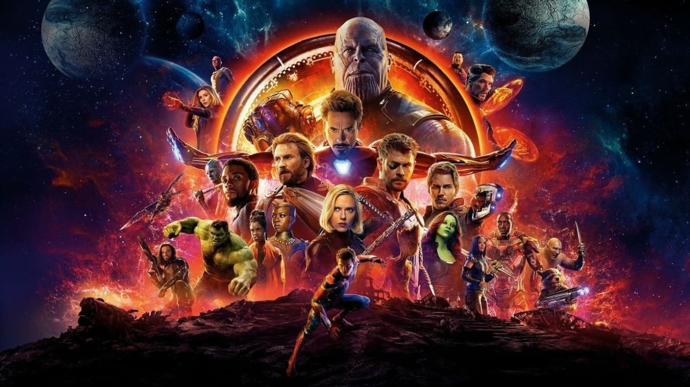
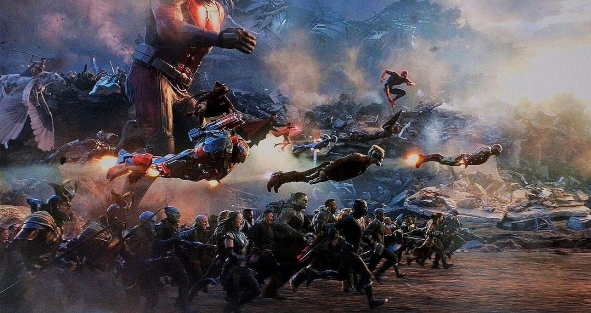
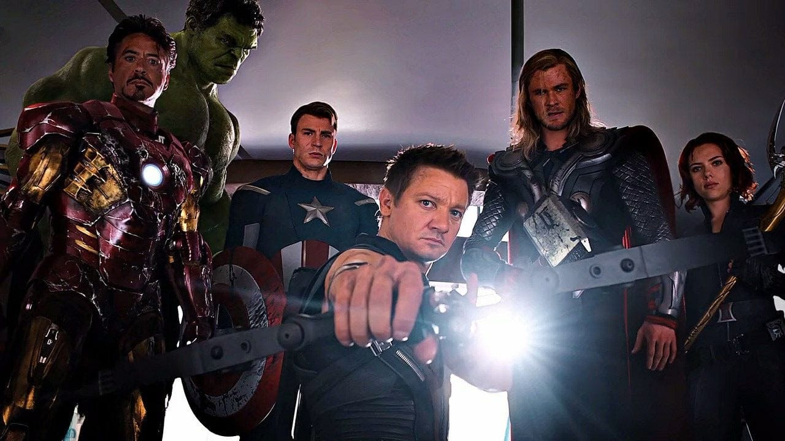

The Avengers are a team of fictional superheroes and the protagonists of the Marvel Cinematic Universe (MCU) media franchise, based on the Marvel Comics team of the same name created by Stan Lee and Jack Kirby in 1963. Founded by S.H.I.E.L.D. Director Nick Fury, the team is a United States-based organization composed primarily of superpowered and gifted individuals, described as "Earth's Mightiest Heroes", who are committed to the world's protection from a variety of threats. The Avengers are depicted as operating in the state of New York: originally from the Avengers Tower in Midtown Manhattan and subsequently in the Avengers Compound in Upstate New York. Arranged as an ensemble of core MCU characters originally consisting of Tony Stark / Iron Man, Steve Rogers / Captain America, Thor, Bruce Banner / Hulk, Natasha Romanoff / Black Widow, and Clint Barton / Hawkeye, and later expanding to include 16 members. They are central to the MCU's first 23 films, collectively known as the Infinity Saga, and are consequently regarded as an important part of the franchise. The Avengers from alternate universes were depicted in various properties from Phase Four of the MCU, including appearances in the first season of the Disney+ animated series What If...? (2021–present) and Doctor Strange in the Multiverse of Madness (2022). The Avengers are set to return in Avengers: The Kang Dynasty (2026) and Avengers: Secret Wars (2027). Both films will be part of the MCU's Phase Six, concluding the Multiverse Saga.
  Iron Man is a superhero appearing in American comic books published by Marvel Comics. Co-created by writer and editor Stan Lee, developed by scripter Larry Lieber, and designed by artists Don Heck and Jack Kirby, the character first appeared in Tales of Suspense #39 in 1963, and received his own title with Iron Man #1 in 1968. Shortly after his creation, Iron Man was a founding member of a superhero team, the Avengers, with Thor, Ant-Man, Wasp and the Hulk. Iron Man stories, individually and with the Avengers, have been published consistently since the character's creation.
Captain America is a superhero created by Joe Simon and Jack Kirby who appears in American comic books published by Marvel Comics. The character first appeared in Captain America Comics #1, published on December 20, 1940 by Timely Comics, a corporate predecessor to Marvel. Captain America's civilian identity is Steve Rogers, a frail man enhanced to the peak of human physical perfection by an experimental "super-soldier serum" after joining the United States Army to aid the country's efforts in World War II. Equipped with an American flag-inspired costume and a virtually indestructible shield, Captain America and his sidekick Bucky Barnes clashed frequently with the villainous Red Skull and other members of the Axis powers. In the final days of the war, an accident left Captain America frozen in a state of suspended animation until he was revived in modern times. He resumes his exploits as a costumed hero and becomes leader of the superhero team the Avengers, but frequently struggles as a "man out of time" to adjust to the new era.
Captain America is a superhero created by Joe Simon and Jack Kirby who appears in American comic books published by Marvel Comics. The character first appeared in Captain America Comics #1, published on December 20, 1940 by Timely Comics, a corporate predecessor to Marvel. Captain America's civilian identity is Steve Rogers, a frail man enhanced to the peak of human physical perfection by an experimental "super-soldier serum" after joining the United States Army to aid the country's efforts in World War II. Equipped with an American flag-inspired costume and a virtually indestructible shield, Captain America and his sidekick Bucky Barnes clashed frequently with the villainous Red Skull and other members of the Axis powers. In the final days of the war, an accident left Captain America frozen in a state of suspended animation until he was revived in modern times. He resumes his exploits as a costumed hero and becomes leader of the superhero team the Avengers, but frequently struggles as a "man out of time" to adjust to the new era.
The Hulk is a superhero appearing in American comic books published by Marvel Comics. Created by writer Stan Lee and artist Jack Kirby, the character first appeared in the debut issue of The Incredible Hulk (May 1962). In his comic book appearances, the character, who has dissociative identity disorder (DID), is primarily represented by the alter ego Hulk, a green-skinned, hulking and muscular humanoid possessing a limitless degree of physical strength, and the alter ego Dr. Robert Bruce Banner, a physically weak, socially withdrawn, and emotionally reserved physicist, both of whom typically resent each other.
Black Widow (Natalia Alianovna "Natasha" Romanova) is a character appearing in American comic books published by Marvel Comics. Created by editor and plotter Stan Lee, scripter Don Rico, and artist Don Heck, the character debuted in Tales of Suspense (April 1964). The character was introduced as a Russian spy, an antagonist of the superhero Iron Man. She later defected to the United States, becoming an agent of the fictional spy agency S.H.I.E.L.D. and a member of the superhero team the Avengers
Hawkeye (Clinton Francis "Clint" Barton) is a fictional character appearing in American comic books published by Marvel Comics. Created by writer Stan Lee and artist Don Heck, the character first appeared as a supervillain in Tales of Suspense (September 1964) and later joined the Avengers as a superhero in The Avengers(May 1965). He has since been a prominent member of several Avengers teams, founding the West Coast Avengers, briefly marrying and subsequently divorcing Bobbi Morse / Mockingbird, adopting the Ronin alias after his death and resurrection before mentoring Kate Bishop as his successor as Hawkeye. He was also ranked at #44 on IGN's Top 100 Comic Book Heroes list.